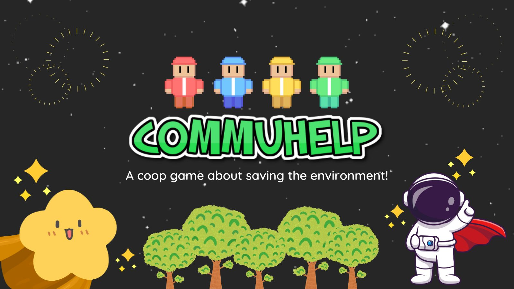

← Back to selected work
Archive
More work
Class projects, concept work, UX studies and experiments. The key pieces are on the homepage.

HODDLE Studios
Interfaces, studio site and merch for a co-op game about saving the environment.
Full case study →Sound designAlien Facility
Soundscape built in Audition from layered effects and ambience.
Sound design8-Bit Level
Retro game soundscape mixed in Audition.